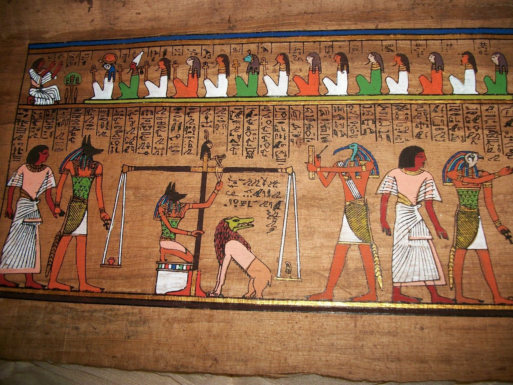
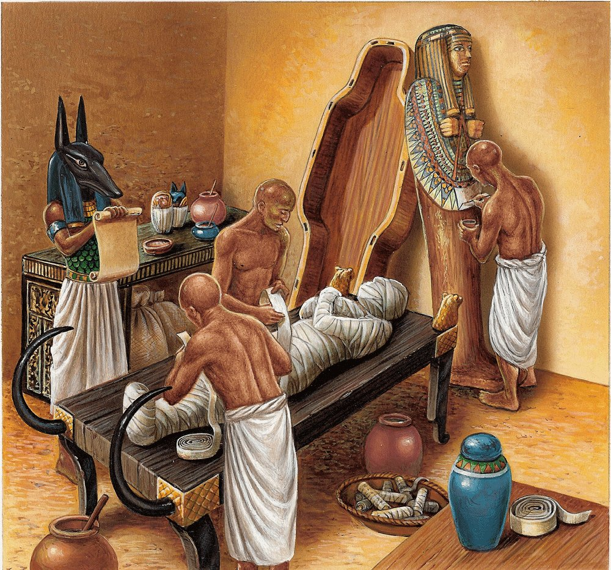
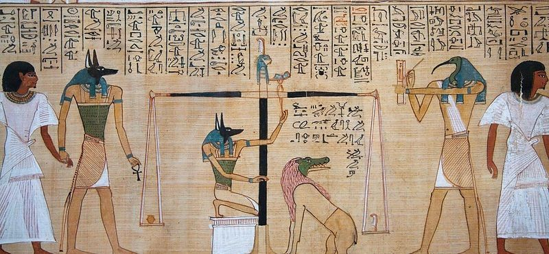
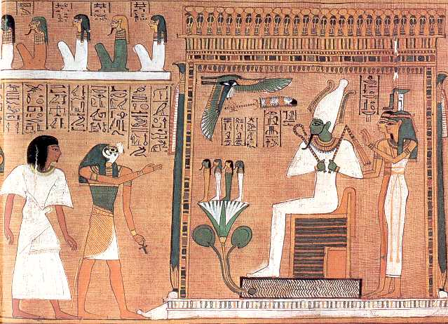

É importante conhecer previamente o mito osiríaco para compreender a importância do
culto aos mortos. A morte no Egito Antigo é uma transição, não um fim, ou seja, a morte representa
uma passagem para outra coisa. Como etapa, a morte é cercada por uma série de ritos, que fazem
parte diretamente do mito osiríaco. Entre os antigos egípcios, as cerimônias e
crenças relacionadas à morte ocupavam uma parte importante de suas vidas.
Os egípcios consideravam que, após a morte, a alma do falecido podia renascer e ter acesso ao "reino dos mortos"
e ao descanso eterno. Após a morte, é possível traçar diferentes etapas que preparam o falecido para a vida após a morte, e
o mito da morte pode ser dividido em duas partes:
- a primeira etapa, que é a jornada do falecido rumo à vida após a morte, com a cerimônia de embalsamamento
- a segunda etapa, que corresponde ao julgamento do falecido pelo deus Osíris quando ele chega à vida após a morte,
a fim de, talvez, ter acesso ao descanso eterno.
O embalsamamento é um ritual realizado na terra, executado por sacerdotes.
Para os egípcios, o homem possui cinco elementos: o djet, isto é, o invólucro corporal,
o shuyt, a sombra, o ren, o nome, o ba, que poderia ser traduzido por alma, e o ka, que é uma
espécie de substância vital. O ka é o que constitui propriamente o homem: nasce ao mesmo tempo que
o homem e lhe sobrevive após a morte. É o ka, mas também a alma do falecido, o ba, que continuará
a jornada rumo à vida após a morte. Para que o ka e o ba possam deixar o invólucro corporal do falecido e
se juntar ao reino dos mortos, o objeto ou corpo deve ser preservado. Para isso, os sacerdotes
realizam uma cerimônia de embalsamamento para transformar o corpo do falecido em múmia. A mumificação
purifica o corpo e o protege da decomposição. O objetivo é aproximar o corpo do falecido
ao de Osíris, que também foi mumificado para permanecer eterno. 
A mumificação dura setenta dias. É realizada pelos utyu, os sacerdotes encarregados da
mumificação. O corpo é primeiro lavado, depois seco ao sol e revestido com óleos e cera de abelha,
que possui propriedades antibacterianas favoráveis à conservação do corpo. Vale notar que a
conservação dos corpos no Egito é naturalmente facilitada pelos solos arenosos e pelo clima seco.
Alguns órgãos, como os pulmões, o estômago, os intestinos e o fígado, são retirados e colocados em
vasos canópicos com a efígie dos quatro filhos de Hórus. O coração, sede do pensamento e dos sentimentos,
geralmente permanece em seu lugar. Já o cérebro é extraído pelo nariz com um gancho.
O cérebro não tem valor no imaginário egípcio, já que é o coração que é considerado a sede do
pensamento — o que provavelmente explica por que é removido e, às vezes, substituído por cera de abelha. Uma vez
retiradas todas as vísceras, o corpo é imerso em natrão (uma substância química encontrada
naturalmente em lagos salgados no Egito), que tem a particularidade de secar
fortemente o corpo ao remover as gorduras presentes, o que, combinado com o clima seco do Egito, favorece
a conservação. Contudo, o corpo fica deformado pelo natrão: ele achata. Para devolvê-lo à forma original,
tecido é colocado dentro do corpo e dos olhos. Uma vez pronto o corpo, os utyu procedem ao
enfaixamento. Amuletos são colocados sobre o corpo do falecido, que é então coberto com tiras
de linho, trazidas pela família. Uma máscara funerária completa tudo para os mais ricos. A múmia é
colocada em um caixão e, então, enterrada de acordo com a posição social e a riqueza do morto.
Se o corpo não for embalsamado, o djet se torna khat após a morte e não pode ter acesso ao descanso eterno.
O ritual de embalsamamento foi criado por Ísis, auxiliada por Anúbis, quando ela reconstituiu o corpo de seu marido
Osíris para trazê-lo de volta à vida. As estátuas e oferendas presentes ao lado do falecido em seu sarcófago
permitem acompanhá-lo em seu caminho até o julgamento da alma.
Uma vez que o djet foi preparado e preservado, o morto pode iniciar sua jornada rumo à vida após a morte. O ba, a alma do falecido,
e seu ka, sua substância vital, deixam o corpo ao qual podem retornar, já que o djet está preservado,
a fim de se juntar ao reino dos mortos. No entanto, o reino dos mortos não está aberto a todos. O falecido
deve passar por muitas etapas. Em cada uma delas, ele deve recitar uma fórmula, escrita no Livro
dos Mortos. Esse livro é composto por vários rolos de papiro e traça a jornada do falecido rumo
à vida após a morte. A lenda atribui sua redação ao deus Toth, que é chamado a decapitar aqueles que
se opõem ao avanço do falecido rumo ao reino dos mortos. O episódio mais famoso do Livro dos Mortos,
por seu caráter fundamental, é o da pesagem da alma.

A pesagem da alma, ou psicostasia, consiste em colocar o coração do falecido, guiado por Anúbis durante sua passagem
entre a vida e a morte, em uma balança, com uma pena (representando a deusa Maat) do outro lado; se o coração
for mais leve (o que significa que o coração não está manchado pelo pecado), o falecido pode se juntar ao reino
dos mortos, onde Osíris o aguarda, e pode levar uma nova vida no reino dos mortos. Caso contrário, será devorado
por um monstro (na maioria das vezes simbolizado pela deusa Amemet, que tem cabeça de crocodilo, corpo de leão
e traseira de hipopótamo). Hórus preside o julgamento da alma, e
Toth registra o resultado. É o coração que é pesado para julgar a alma, pois o coração é considerado
incapaz de mentir: todas as faltas cometidas pelo falecido durante sua vida ficam, portanto, guardadas em seu coração. 
Osíris só se tornou o deus do reino dos mortos depois de passar com sucesso no teste da pesagem da alma. O falecido
desejava identificar-se com Osíris para alcançar o reino dos mortos e repousar em paz.